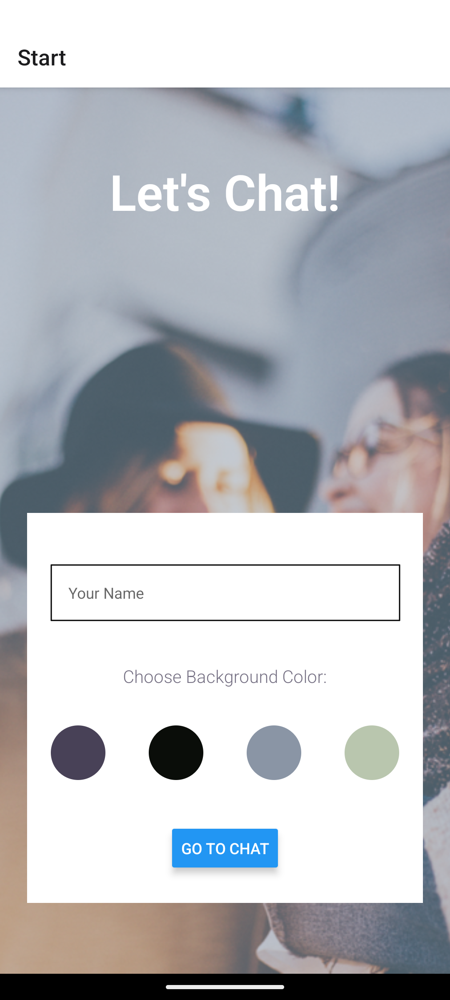

New Chat App Case Study
Project Overview
The New Chat App is a custom-built mobile chat application developed using React Native and Expo. This project addresses the need for a simple yet feature-rich communication tool, enabling users to engage in real-time text conversations, easily share photos directly from their gallery or camera, and transmit thier precise location.
My role encompassed the complete mobile application lifecycle, from the initial concept and UI/UX design considerations in React Native to integrating Google Firestore Databse for persistent chat data and ensuring cross-platform functionality. This app showcases my ability to build interactive and responsive mobile experiences.
Problem & Opportunity
Recognizing the growing demand for efficient mobile communication tools, I identified an opportunity to create a chat application that not only supports text messaging but also enhances user interaction through multimedia sharing and location services. The goal was to develop a user-friendly app that could serve as a reliable platform for personal and group conversations, while also being accessible on both iOS and Android devices.
Project Goals
- Develop a cross-platform mobile chat application using React Native and Expo.
- Enable users to send images from the gallery.
- Allow users to capture and send photos directly from the camera.
- Implement location sharing functionality to send the user's current location.
Process & Development
1. Planning and Research
I started by outlining the core features of the chat application and researching best practices for mobile app development with React Native. I also explored various libraries for image handling and location services to ensure a smooth user experience.
2. Implementation
The application was built using React Native, leveraging Expo for rapid development and testing. I implemented Firebase Firestore for real-time data storage and retrieval, allowing users to send and receive messages instantly. The app's UI was designed with a focus on simplicity and usability, ensuring that users could easily navigate through conversations, send images, and share their location with minimal effort.
3. Testing
Throughout the development process, I conducted extensive testing on both iOS and Android devices to ensure consistent performance and functionality. This included testing the image upload feature, location sharing, and overall app responsiveness. I also gathered feedback from peers to refine the user interface and enhance the overall user experience.
Challenges & Soultions
Developing the New Chat App presented several challenges that required innovative solutions:
- Challenge: Cross-Platform Compatibility: Ensuring the app functioned seamlessly on both iOS and Android
devices was a significant challenge.
Solution: I utilized React Native's cross-platform capabilities and tested extensively on both platforms to identify and resolve any inconsistencies. - Challenge: Real-Time Data Synchronization: Implementing real-time messaging with Firebase Firestore required
careful management of data flow.
Solution: I used Firestore's real-time listeners to ensure that messages were updated instantly across all devices, providing a smooth user experience.
Learning & Takeaways
This project was instrumental in deepening my understanding of mobile app development, particularly with React Native. Key takeaways include:
- Mastering the use of React Native for building cross-platform applications.
- Gaining hands-on experience with Firebase Firestore for real-time data management.
- Understanding the intricacies of mobile UI/UX design to enhance user engagement and satisfaction.
Future Enhancements
Given more time, I would like to implement the following features:
- Push Notifications: To alert users of new messages even when the app is not actively in use.
- Group Chats: Allowing multiple users to participate in a single conversation.
- Message Reactions: Enabling users to react to messages with emojis for more expressive communication.
Technology Details
Technologies & Tools Used
- React Native: For building the mobile application.
- Expo: For rapid development and testing of the app.
- Firebase Firestore: For real-time data storage and retrieval.
- JavaScript: As the primary programming language for the application logic.
View Project
View a live demo and it's code here: